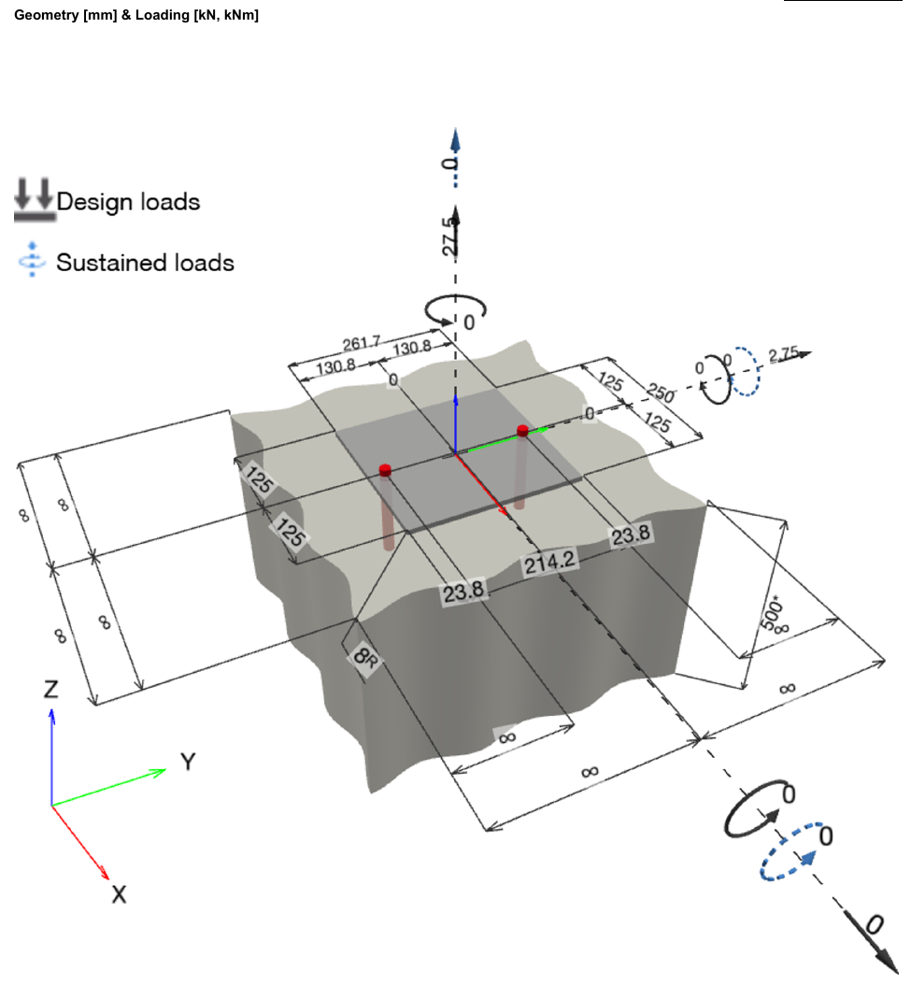
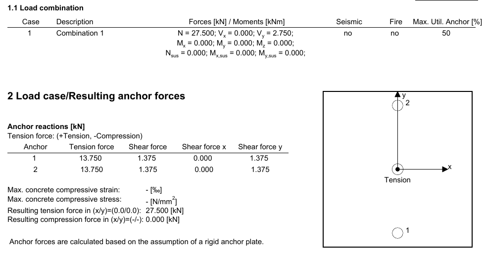
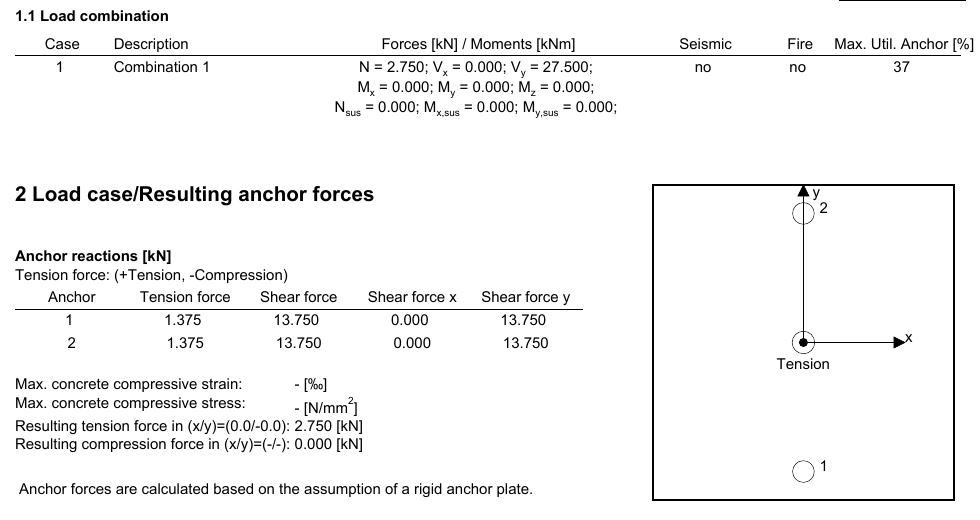

S.05 / Concrete anchorage design
Lifeline anchor calculations
A focused anchorage calculation study connecting applied loads, anchor reactions, and concrete and steel resistance checks.
- MY ROLE
- Designer · Anchorage calculations
- DISCIPLINE
- Lifeline anchorage / Concrete
- PERIOD
- September 2026
- ISSUE STATUS
- Calculation study

The task
The same core-wall anchorage needed to be assessed under tension-dominant and shear-dominant loading, with consistent anchor geometry and concrete assumptions.
My contribution
I prepared two Hilti PROFIS Engineering calculation reports for the two-M16 anchorage. The models use HIT-HY 200-R V3 adhesive with HAS-U 5.8 rods in cracked C30/37 concrete and document the applied loads, anchor reactions, and resistance checks.
What I delivered
- Anchor geometry and loading model.
- Separate tension-dominant and shear-dominant calculation cases.
- Steel, pullout, concrete breakout, pryout, and combined-action results.
- Recorded material, installation, and calculation assumptions.
The result
The supplied reports record maximum anchor utilization of 50% for the tension-dominant case and 37% for the shear-dominant case, under their stated model assumptions.
Scope: anchorage calculations for the supplied load cases. The reports assume a rigid plate and infinite concrete edge distances; plate rigidity and the complete lifeline system require separate verification. This portfolio case does not represent a system certification or site-use release.

